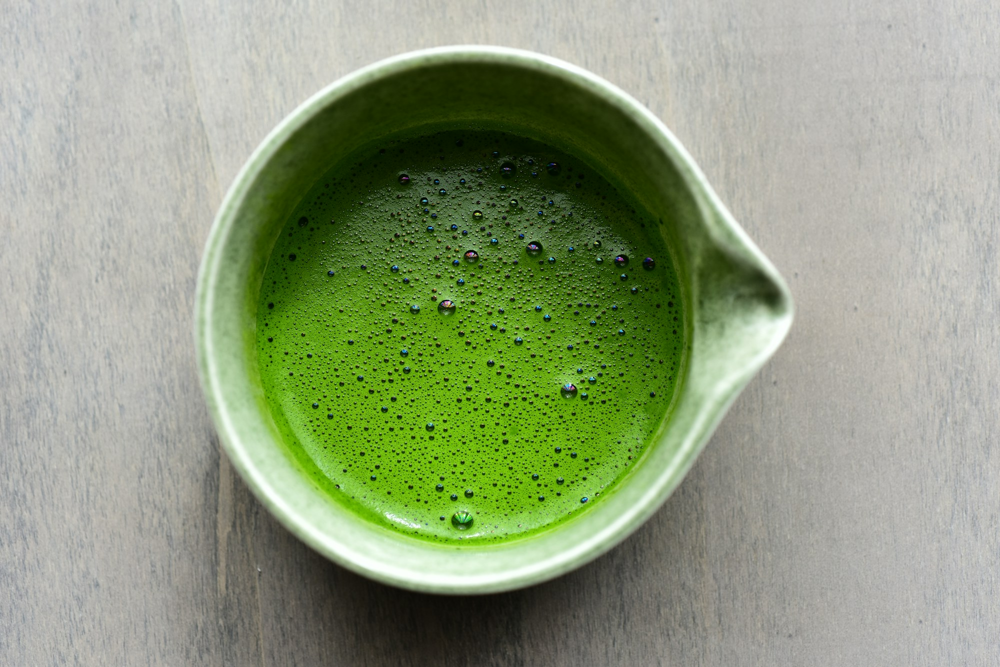

moss
& whiskMorning Moss
& whiskMorning Moss
Morning Moss
Smooth, bright and gently sweet. A quiet companion for your first cup.
Good tea. A favourite bowl. Five minutes that belong entirely to you.

A small, thoughtfully imagined collection for everyday moments.
Smooth, bright and gently sweet. A quiet companion for your first cup.
A rounded, mellow blend imagined for creamy iced lattes.
A little ritual kit: bowl, bamboo whisk and your next slow morning.
Our idea of a good ritual is simple: something you look forward to, not something you have to get right. A few gentle movements. A little warmth. Your own way of making it.
Our way of thinkingIllustrative testimonials · Fictional people and experiences, written for this concept website.
“The ritual became my favourite five minutes before the rest of the day begins.”Anya, early riser · Sample review
“A beautifully simple introduction. Even my first bowl felt like a little occasion.”Rohan, tea beginner · Sample review
“The whole experience feels warm and unhurried. Exactly the mood I was looking for.”Lila, slow-weekend enthusiast · Sample review